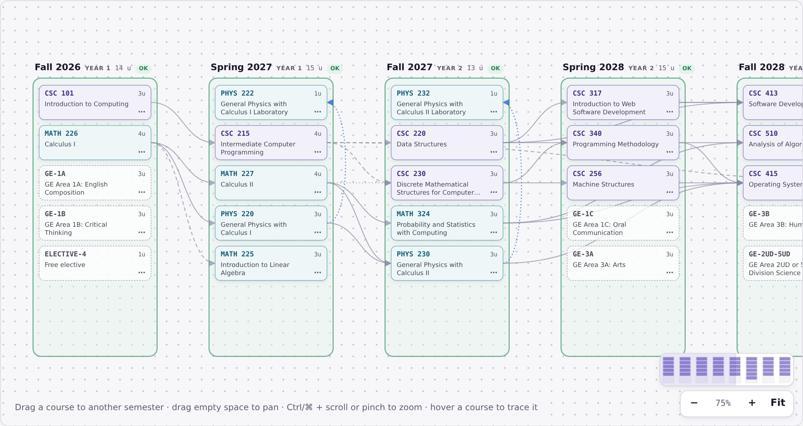
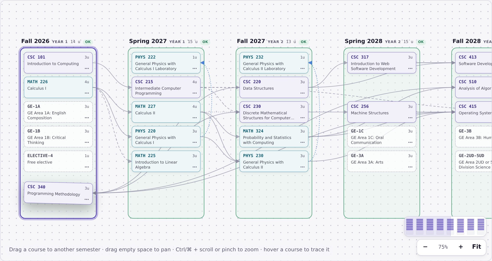
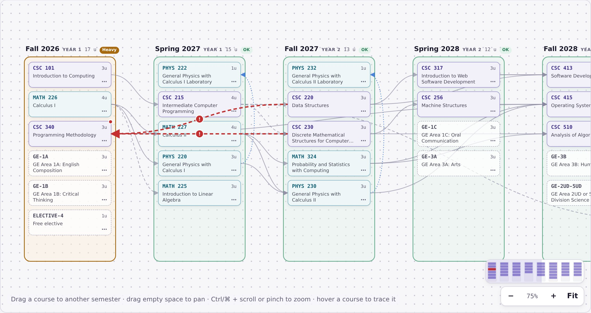
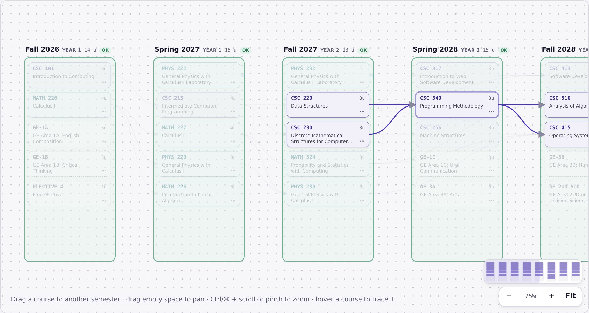
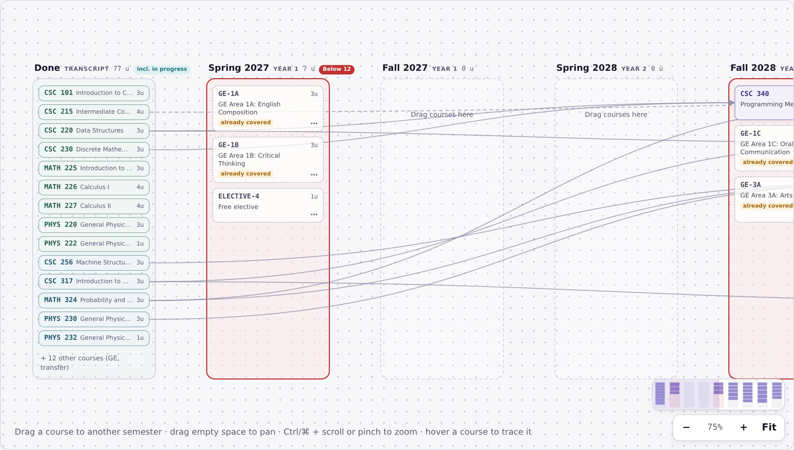
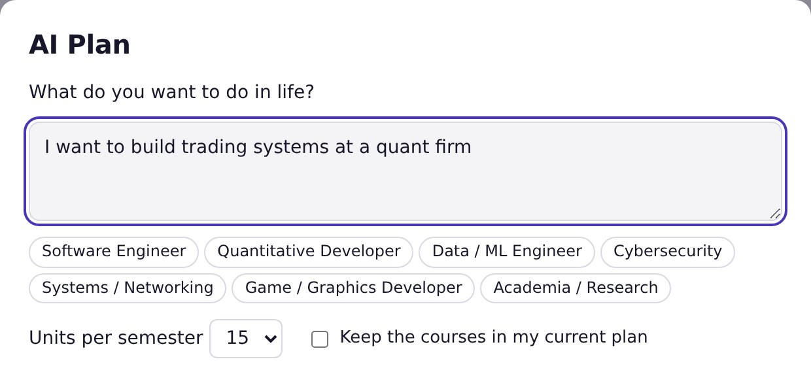
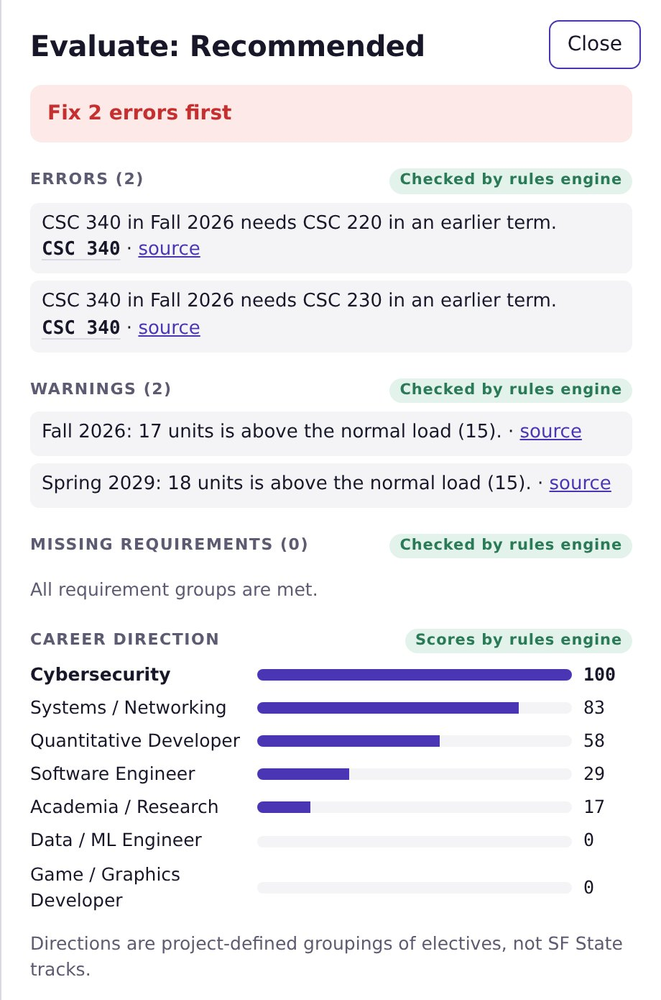

Requirement groups
Math & physics, core, advanced, 15 elective units with 12 in CSC, GE and free electives, each with live progress.
GatorGraph turns the SF State Bulletin into a plan you can see. Drag courses between semesters, and a rules engine flags every broken prerequisite and unit limit while you plan.
Free. Runs in your browser. No sign-in.

Built on the public SF State Bulletin 2026–27
Why GatorGraph
Today, SF State students plan in the Student Center, which runs on the CSU's Oracle PeopleSoft system.1 It splits the job in two: a Degree Progress Report that audits what's done, and a Degree Planner that lists courses by term. Neither shows how courses connect.
To be fair: the Student Center already suggests courses per term, supports locks and What-If reports, and knows your transfer and AP credit. GatorGraph doesn't replace your official record. It makes the plan readable, and your advisor still signs off.
Product
Inspired by infinite canvases. Every semester is a group, every course a card, every prerequisite an arrow.
Pick up a card and drop it in another semester. Its arrows follow it as you move, and the semester you're over lights up.

Move CSC 340 ahead of CSC 220 and CSC 230 and two red arrows appear, each with a warning marker. The semester turns amber because it's now above the normal load.

Hover any course and its prerequisites and the courses it unlocks light up. Everything else fades. Click it to follow the whole chain.

Load your transcript and finished courses move to a Done column. The plan fills only the semesters you have left, and GE areas you've already covered aren't asked for again.

AI, with a referee
Describe a goal and the AI planner drafts all eight semesters. The rules engine checks the draft before you see it, and anything it rejects goes back to be fixed.
Pick a career direction or write your own goal. You get a new plan tab with the steps the model took and the rules engine's verdict. (The planner hosted here has no server, so it uses the built-in deterministic planner instead.)

A verdict, every error and warning with its source, the requirements still missing, and how your electives score across career directions.

Everything in the box
Math & physics, core, advanced, 15 elective units with 12 in CSC, GE and free electives, each with live progress.
Under 12, heavy over 15 and over the 19-unit registration maximum, each linked to the policy it comes from.
Finds the courses where one semester of delay moves your graduation date, and by how much.
Keep several plans side by side, duplicate one to try a what-if, rename with a double-click. Saved in your browser.
Load an extracted transcript; low-confidence grades and below-minimum grades are flagged before they reach the plan.
Courses, prerequisites and policies link to their Bulletin page. Nothing is marked advisor-verified until it is.
How it works
New freshman, or load your transcript. Set your first semester, calculus placement and target units.
Start from the recommended plan, ask AI Plan for one built around your goal, or drag courses in yourself.
Fix anything red, then open Evaluate for the verdict, missing requirements and your career direction.
Trust
Every plan, whether you made it or the model did, goes through the same rules engine. A model plan that still breaks a rule after two repairs is replaced by a deterministic plan. Course IDs the model makes up are rejected, never auto-corrected.
FAQ
No. GatorGraph is an unofficial student project built for the SF Hacks × GDG AI Hackathon. It doesn't change your record or register you for anything. Confirm your plan with an advisor and your Degree Progress Report.
From the public SF State Bulletin 2026–27: courses, prerequisites, units, requirements, policies and official roadmaps. Every course links back to its Bulletin page. No course has been checked by an advisor yet, and the planner says so.
The planner covers the B.S. in Computer Science today. The scraped data already includes 423 programs, and the pipeline is built to add more majors.
No account. Plans are saved in your own browser (local storage). A transcript you load stays in that browser tab and isn't saved.
The planner hosted here runs without a server, so AI Plan uses the built-in deterministic planner and tells you so. Run GatorGraph locally with a Gemini API key to use the AI planner; the rules engine checks its plans the same way.
The engine is tested against 15 planted mistakes (26 expected issues, all caught) and against SF State's three official CS roadmaps, which all pass. Results are in the repository's EVALS.md. It can still be wrong, which is why every rule links to its source.
Open the planner, drag a few courses around, and watch the arrows.